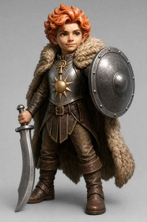
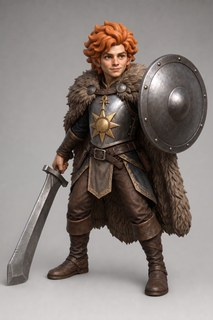
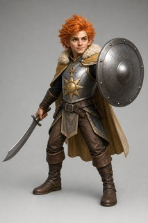

Three targeted img2img fixes, each run on all three models to find the best base×editor pairing. (1) the R4 best-sword riverflow roll had its inverted GRIP fixed; (2) the flash31 roll (great hair+fur cloak) had its straight broadsword RE-CURVED into a scimitar; (3) the clean R3 keeper was fully RE-THICKENED with extra detail (all four targets + curve + grip). One roll per cell (9 images).
Pre-read — the curve fix WORKED everywhere, and riverflow25-as-editor swept all three bases. Every one of the nine now shows a clearly curved scimitar (the exact thing that broke in R4), so the explicit "keep it CURVED" instruction held even on flash31. Crop audits give five keeper-candidates. The standouts: riverflow-gripfix · riverflow25 — grip now CORRECT (thumb on the front, nail visible), curved blade preserved, and the blade tip grounded — the cleanest sword+grip of the round; and on the re-thicken base, riverflow25 (all four thickenings + a genuinely lithe build) and gptimage2 (best identity match, sturdiest tip).
The pattern across editors:riverflow25 is the strongest on every base; flash31 failed its job each time (grip left inverted → REJECT on base 1; a recurved kukri instead of a scimitar on base 2; ears still jutting on base 3); gptimage2 is competent but recurringly floats the blade tip and drifts chibi/stocky (and added a crossguard the base lacked).
The unresolved tension for your eye: no single image nails everything — the best sword+grip cell (riverflow-gripfix·riverflow25) reads chibi (inherited from that base), while the lithe re-thicken cells float the blade tip instead of planting it. Build (chibi/stocky) and tip-grounding are the two open items.
Blind cross-check (read the chips): as in R1–R4 the unbiased blind detector called all 9 print-REJECT — its usual print-strict behaviour — and its flags concentrate on build (stocky/chibi) and ears/pendant, which agree with the crop audits' build/ear warnings (a real cross-cutting signal, not noise). Raw: notes/r5-blind-detect.jsonl.
Process note: a naming bug meant the intended 2nd roll overwrote the 1st, so this is 1 roll per cell (9 images), though ~2 rolls' worth (~$4.12) was billed. Fixed for any re-rolls.
Verdicts / info needed
Answer any subset. The round largely succeeded (curve fixed everywhere; grip fixed on two base-1 cells; all four thickenings on the re-thicken base) — the open question is which base×editor carries forward and how to resolve the build/tip tension.
Which cell carries to R6 (clay-sculpt turnaround)?Dimitri
Five keeper-candidates; the trade-off is sword+grip+grounded vs lithe build.
r3keeper-rethicken · riverflow25 — all four thickenings + a genuinely LITHE build + curved blade + clean grip. Knock: blade tip floats; hair a bit uniform/ringlety.
r3keeper-rethicken · gptimage2 — best identity match + sturdiest (least fragile) tip. Knock: one ear pokes through, build a touch stocky, tip floats.
Reject / hybrid — e.g. carry riverflow-gripfix·riverflow25 but ask a targeted re-roll to de-chibify the build, or carry a re-thicken cell but ground the tip.
Two design callsDimitri
Both recur from R3/R4 and are cheap to pin now.
Build — is the chibi/childlike read on the riverflow best-sword base acceptable, or should we push the lithe/fey build (favours a re-thicken cell)?
Grounded blade tip — require the tip planted on the floor as a third contact (only some cells achieve it), or accept a floating tip and add the base contact at the mesh/basing stage?
Worth a targeted second roll?Dimitri
The intended 2nd roll was lost to a naming bug. A single correctly-named re-roll of your chosen cell (~$0.35 on riverflow) could try to resolve the one open flaw (ground the tip / de-chibify) rather than a blanket 9-cell re-run. Say if you want it.
Core inputs — the base image(s) these candidates were built from

riverflow25 best-sword base (R4) — grip fix

flash31 hair + fur-cloak base (R4) — sword re-curve

R3 keeper (clean identity) — re-thicken
Base 1 — GRIP fix (base: R4 best-sword riverflow roll)
The excellent curved-scimitar riverflow roll, edited to fix ONLY the inverted grip. riverflow25 and gptimage2 fixed the grip (thumb now on the front); flash31 left it inverted → REJECT. riverflow25 also keeps the tip grounded; gptimage2 floats it and reads most chibi.
Grip remains INVERTED — the one thing this edit was meant to fix is unfixed.
Base 2 — SWORD re-curve (base: flash31 hair/fur roll)
The great-hair/great-fur flash31 roll whose blade came back a straight broadsword, edited to re-curve ONLY the blade. riverflow25 = the clean single-arc scimitar with a grounded tip (keeper); gptimage2 curves cleanly but floats the tip + stockier; flash31 self-edit produced a recurved kukri, not a scimitar.
Curved but the wrong curve — recurved kukri with a hooked thin tip, not the clean scimitar arc.
Base 3 — RE-THICKEN + detail (base: clean R3 keeper)
The original un-thickened keeper, given a fresh full thickening pass (all four targets) + curve + grip + extra detail. riverflow25 lands all four with a lithe build; gptimage2 keeps the best identity + sturdiest tip (one ear pokes); flash31's ears still jut and its tip is a needle.
Hair/cloak/blade thicken well and blade strongly curved, but pointed ears still jut and blade ends in a fragile needle tip.
Proposed next steps
Everything downstream keys off your cell pick (and the two design calls).
R6 — clay-sculpt turnaround of the chosen cellon your pick
Render the winning cell as a monochrome clay-sculpt 4-view turnaround (2×2 rotational turntable), two rolls for insurance (correctly named this time). Carry the confirmed design calls (build; grounded tip).
Optional — one targeted re-roll before R6if you want the open flaw resolved first
A single correctly-named re-roll of the chosen cell to try to ground the tip / de-chibify the build (~$0.35 on riverflow), rather than a blanket re-run.
Two Meshy rolls, pick the defect-free one; validate watertightness, scale to ~24 mm figure on a 25 mm base, probe thin features (blade tip, ears, ankh chain).
Your eye-call, Dimitri. Pick the cell to carry to the R6 turnaround — or name a hybrid / a targeted re-roll. The two open items are the build (chibi vs lithe) and the grounded blade tip; both are valid to pin now or defer.
riverflow25 · KEEPER — grip fixed + grounded
sourceful/riverflow-v2.5-pro via openrouter · resolution=2K · $0.53 · 2026-07-15T02:40:31
Edit the attached reference image of the gnome champion Trumbert. This base is ALREADY very good — keep essentially everything: same lithe fey gnome, same face and warm expression, same pose (protective interpose, both feet flat on the ground), same steel breastplate with the single bold chunky sun emblem, same ankh-and-sun pendant, same plain round steel shield, same thick fur cloak, same one-mass flame hair, same trousers and boots, same framing and plain gray studio backdrop. In particular, KEEP THE SCIMITAR EXACTLY AS IT IS — its shape, its clear CURVE, its thickness, and its lowered tip-on-the-ground position are all correct; do NOT redraw, straighten, re-bulk or re-pose the blade. Do NOT change his identity, kit, chirality or composition. Keep it a photorealistic full-body concept render.
ONLY fix ONE thing — the way his RIGHT hand holds the hilt:
THE GRIP — FIX IT TO A NORMAL FORWARD HOLD. Re-draw only his right hand on the scimitar hilt as a natural forward sword grip: the THUMB is on the FRONT / near face of the grip, toward the viewer, and CLEARLY VISIBLE; the four fingers wrap around the BACK of the hilt, behind it. Thumb-in-front, fingers-behind, knuckles facing away — an ordinary sabre hold. The current image has the hand reversed/inverted (thumb on the wrong side) — correct it. It must NOT be a reversed / ice-pick grip and must NOT be palm-out; the thumb should show on the front of the hand facing the camera. Keep the hand in the same place on the same hilt — only the grip orientation changes.
Change nothing else at all. No text, numbers, letters or logos anywhere.
Edit the attached reference image of the gnome champion Trumbert. This base is ALREADY very good — keep essentially everything: same lithe fey gnome, same face and warm expression, same pose (protective interpose, both feet flat on the ground), same steel breastplate with the single bold chunky sun emblem, same ankh-and-sun pendant, same plain round steel shield, same thick fur cloak, same one-mass flame hair, same trousers and boots, same framing and plain gray studio backdrop. In particular, KEEP THE SCIMITAR EXACTLY AS IT IS — its shape, its clear CURVE, its thickness, and its lowered tip-on-the-ground position are all correct; do NOT redraw, straighten, re-bulk or re-pose the blade. Do NOT change his identity, kit, chirality or composition. Keep it a photorealistic full-body concept render.
ONLY fix ONE thing — the way his RIGHT hand holds the hilt:
THE GRIP — FIX IT TO A NORMAL FORWARD HOLD. Re-draw only his right hand on the scimitar hilt as a natural forward sword grip: the THUMB is on the FRONT / near face of the grip, toward the viewer, and CLEARLY VISIBLE; the four fingers wrap around the BACK of the hilt, behind it. Thumb-in-front, fingers-behind, knuckles facing away — an ordinary sabre hold. The current image has the hand reversed/inverted (thumb on the wrong side) — correct it. It must NOT be a reversed / ice-pick grip and must NOT be palm-out; the thumb should show on the front of the hand facing the camera. Keep the hand in the same place on the same hilt — only the grip orientation changes.
Change nothing else at all. No text, numbers, letters or logos anywhere.
Edit the attached reference image of the gnome champion Trumbert. This base is ALREADY very good — keep essentially everything: same lithe fey gnome, same face and warm expression, same pose (protective interpose, both feet flat on the ground), same steel breastplate with the single bold chunky sun emblem, same ankh-and-sun pendant, same plain round steel shield, same thick fur cloak, same one-mass flame hair, same trousers and boots, same framing and plain gray studio backdrop. In particular, KEEP THE SCIMITAR EXACTLY AS IT IS — its shape, its clear CURVE, its thickness, and its lowered tip-on-the-ground position are all correct; do NOT redraw, straighten, re-bulk or re-pose the blade. Do NOT change his identity, kit, chirality or composition. Keep it a photorealistic full-body concept render.
ONLY fix ONE thing — the way his RIGHT hand holds the hilt:
THE GRIP — FIX IT TO A NORMAL FORWARD HOLD. Re-draw only his right hand on the scimitar hilt as a natural forward sword grip: the THUMB is on the FRONT / near face of the grip, toward the viewer, and CLEARLY VISIBLE; the four fingers wrap around the BACK of the hilt, behind it. Thumb-in-front, fingers-behind, knuckles facing away — an ordinary sabre hold. The current image has the hand reversed/inverted (thumb on the wrong side) — correct it. It must NOT be a reversed / ice-pick grip and must NOT be palm-out; the thumb should show on the front of the hand facing the camera. Keep the hand in the same place on the same hilt — only the grip orientation changes.
Change nothing else at all. No text, numbers, letters or logos anywhere.
Reference images
trumbert-r4-interpose-thick-riverflow25-1.png
riverflow25 · KEEPER — clean scimitar, grounded
sourceful/riverflow-v2.5-pro via openrouter · resolution=2K · $0.36 · 2026-07-15T02:43:17
Edit the attached reference image of the gnome champion Trumbert. This base has great HAIR and a great CLOAK — keep them and everything else: same lithe fey gnome, same face and warm expression, same pose (protective interpose, both feet flat on the ground), same steel breastplate with the single bold chunky sun emblem, same ankh-and-sun pendant, same plain round steel shield, same HEAVY THICK FUR CLOAK, same ONE-MASS FLAME HAIR with embedded ears, same trousers and boots, same framing and plain gray studio backdrop, same right-hand grip. Do NOT change his identity, kit, chirality or composition. Keep it a photorealistic full-body concept render.
ONLY fix ONE thing — the SHAPE OF THE BLADE, which is currently wrong:
THE SCIMITAR — RE-CURVE IT INTO A PROPER SCIMITAR. In this base the sword reads as a STRAIGHT, broad BROADSWORD / falchion — that is wrong. Reshape the blade in his right hand into an UNMISTAKABLY CURVED single-edged SCIMITAR: a crescent sabre whose blade sweeps in one smooth continuous ARC from the crossguard to the point, curving like a crescent moon (both the sharp edge and the back spine follow the same curve). It must NOT be straight, NOT a broadsword, NOT a straight-edged falchion — the curve should be obvious at a glance. Keep the blade a solid, sturdy, print-safe cross-section (no thin needle edge or fragile point), but the CURVED SILHOUETTE TAKES PRIORITY over sheer bulk — a moderately thick clearly-curved blade, never a thick straight one. Keep it lowered and de-escalating with its TIP RESTING ON THE GROUND beside his near foot as a third ground contact. Plain chunky pommel and simple crossguard, no decoration. Keep the same right hand in the same place gripping the same hilt — only the blade's shape changes.
Change nothing else — keep the hair, ears, fur cloak, face, armor, shield and pose exactly as they are. No text, numbers, letters or logos anywhere.
Reference images
trumbert-r4-interpose-i2i-flash31-1.png
gptimage2 · FIXABLE — clean curve, floaty tip
openai/gpt-image-2 via openrouter · quality=high · $0.18 · 2026-07-15T02:43:04
Edit the attached reference image of the gnome champion Trumbert. This base has great HAIR and a great CLOAK — keep them and everything else: same lithe fey gnome, same face and warm expression, same pose (protective interpose, both feet flat on the ground), same steel breastplate with the single bold chunky sun emblem, same ankh-and-sun pendant, same plain round steel shield, same HEAVY THICK FUR CLOAK, same ONE-MASS FLAME HAIR with embedded ears, same trousers and boots, same framing and plain gray studio backdrop, same right-hand grip. Do NOT change his identity, kit, chirality or composition. Keep it a photorealistic full-body concept render.
ONLY fix ONE thing — the SHAPE OF THE BLADE, which is currently wrong:
THE SCIMITAR — RE-CURVE IT INTO A PROPER SCIMITAR. In this base the sword reads as a STRAIGHT, broad BROADSWORD / falchion — that is wrong. Reshape the blade in his right hand into an UNMISTAKABLY CURVED single-edged SCIMITAR: a crescent sabre whose blade sweeps in one smooth continuous ARC from the crossguard to the point, curving like a crescent moon (both the sharp edge and the back spine follow the same curve). It must NOT be straight, NOT a broadsword, NOT a straight-edged falchion — the curve should be obvious at a glance. Keep the blade a solid, sturdy, print-safe cross-section (no thin needle edge or fragile point), but the CURVED SILHOUETTE TAKES PRIORITY over sheer bulk — a moderately thick clearly-curved blade, never a thick straight one. Keep it lowered and de-escalating with its TIP RESTING ON THE GROUND beside his near foot as a third ground contact. Plain chunky pommel and simple crossguard, no decoration. Keep the same right hand in the same place gripping the same hilt — only the blade's shape changes.
Change nothing else — keep the hair, ears, fur cloak, face, armor, shield and pose exactly as they are. No text, numbers, letters or logos anywhere.
Edit the attached reference image of the gnome champion Trumbert. This base has great HAIR and a great CLOAK — keep them and everything else: same lithe fey gnome, same face and warm expression, same pose (protective interpose, both feet flat on the ground), same steel breastplate with the single bold chunky sun emblem, same ankh-and-sun pendant, same plain round steel shield, same HEAVY THICK FUR CLOAK, same ONE-MASS FLAME HAIR with embedded ears, same trousers and boots, same framing and plain gray studio backdrop, same right-hand grip. Do NOT change his identity, kit, chirality or composition. Keep it a photorealistic full-body concept render.
ONLY fix ONE thing — the SHAPE OF THE BLADE, which is currently wrong:
THE SCIMITAR — RE-CURVE IT INTO A PROPER SCIMITAR. In this base the sword reads as a STRAIGHT, broad BROADSWORD / falchion — that is wrong. Reshape the blade in his right hand into an UNMISTAKABLY CURVED single-edged SCIMITAR: a crescent sabre whose blade sweeps in one smooth continuous ARC from the crossguard to the point, curving like a crescent moon (both the sharp edge and the back spine follow the same curve). It must NOT be straight, NOT a broadsword, NOT a straight-edged falchion — the curve should be obvious at a glance. Keep the blade a solid, sturdy, print-safe cross-section (no thin needle edge or fragile point), but the CURVED SILHOUETTE TAKES PRIORITY over sheer bulk — a moderately thick clearly-curved blade, never a thick straight one. Keep it lowered and de-escalating with its TIP RESTING ON THE GROUND beside his near foot as a third ground contact. Plain chunky pommel and simple crossguard, no decoration. Keep the same right hand in the same place gripping the same hilt — only the blade's shape changes.
Change nothing else — keep the hair, ears, fur cloak, face, armor, shield and pose exactly as they are. No text, numbers, letters or logos anywhere.
Reference images
trumbert-r4-interpose-i2i-flash31-1.png
riverflow25 · KEEPER — all four, lithe
sourceful/riverflow-v2.5-pro via openrouter · resolution=2K · $0.36 · 2026-07-15T02:45:56
Edit the attached reference image of the gnome champion Trumbert (this is the ORIGINAL un-thickened keeper). KEEP his identity, kit, pose, chirality and composition: same lithe fey gnome, same face and warm expression, same protective-interpose pose with BOTH FEET FLAT on the ground, same steel breastplate with the single bold sun emblem, same ankh-and-sun pendant, same plain round steel shield, same trousers and boots, same framing and plain gray studio backdrop. Keep it a photorealistic full-body concept render.
Re-sculpt him to be BOTH print-ready AND richly detailed — thick, solid, chunky LOAD-BEARING forms with crisp, well-defined surface detail (not mushy, not oversimplified). Make ALL of these changes together:
1. HAIR (thicken): rebuild the flame-colored hair as ONE thick, chunky, connected mass of bold rounded locks — remove every thin wisp, fine strand, spike and delicate flame-lick — but keep crisp, clearly-defined individual locks so it reads as detailed sculpted hair, not a smooth blob. Tips merge back into the head.
2. EARS (embed): pin the pointed gnome ears back and shorten them — tuck them into and behind the thick hair so they are EMBEDDED in the hair mass and do NOT stick out sideways or form thin protruding points.
3. CLOAK (thicken to FUR): turn his thin fabric cape into a HEAVY, THICK FUR cloak — a substantial deep-pile fur mantle draping over both shoulders and down his back as a solid chunky volume with thick rolled fur edges and crisp, detailed fur texture. No thin fabric, no flat sheet, no thin flapping hem.
4. SCIMITAR (thicken AND curve): make the blade a solid, sturdy, print-safe cross-section (no thin needle edge or fragile point) AND unmistakably CURVED — a crescent scimitar whose blade sweeps in one smooth continuous ARC from crossguard to point (edge and spine both curved). It must NOT be a straight blade, a broadsword or a straight falchion; the curved silhouette takes PRIORITY over bulk. Re-angle it LOWERED and de-escalating with its TIP RESTING ON THE GROUND beside his near foot as a solid third ground contact. Plain chunky pommel and simple crossguard.
5. GRIP (correct forward hold): his right hand grips the hilt in a natural forward sword grip — the THUMB on the FRONT / near face of the grip, toward the viewer and CLEARLY VISIBLE; the four fingers wrap around BEHIND the hilt. Thumb-in-front, fingers-behind, knuckles away — NOT reversed, NOT ice-pick, NOT palm-out.
Also sharpen the identity details while keeping them print-safe: crisp, high-relief chest sun emblem (thick triangular rays, few of them), a bold well-defined ankh-and-sun pendant sitting flush against the chest, and clean defined armor/strap/boot detail. Everything thick and solid, but detailed and crisp — never mushy.
No text, numbers, letters or logos anywhere.
Reference images
trumbert-r3-p6interpose-gptimage2-1.png
gptimage2 · KEEPER — best identity, sturdy tip
openai/gpt-image-2 via openrouter · quality=high · $0.18 · 2026-07-15T02:45:31
Edit the attached reference image of the gnome champion Trumbert (this is the ORIGINAL un-thickened keeper). KEEP his identity, kit, pose, chirality and composition: same lithe fey gnome, same face and warm expression, same protective-interpose pose with BOTH FEET FLAT on the ground, same steel breastplate with the single bold sun emblem, same ankh-and-sun pendant, same plain round steel shield, same trousers and boots, same framing and plain gray studio backdrop. Keep it a photorealistic full-body concept render.
Re-sculpt him to be BOTH print-ready AND richly detailed — thick, solid, chunky LOAD-BEARING forms with crisp, well-defined surface detail (not mushy, not oversimplified). Make ALL of these changes together:
1. HAIR (thicken): rebuild the flame-colored hair as ONE thick, chunky, connected mass of bold rounded locks — remove every thin wisp, fine strand, spike and delicate flame-lick — but keep crisp, clearly-defined individual locks so it reads as detailed sculpted hair, not a smooth blob. Tips merge back into the head.
2. EARS (embed): pin the pointed gnome ears back and shorten them — tuck them into and behind the thick hair so they are EMBEDDED in the hair mass and do NOT stick out sideways or form thin protruding points.
3. CLOAK (thicken to FUR): turn his thin fabric cape into a HEAVY, THICK FUR cloak — a substantial deep-pile fur mantle draping over both shoulders and down his back as a solid chunky volume with thick rolled fur edges and crisp, detailed fur texture. No thin fabric, no flat sheet, no thin flapping hem.
4. SCIMITAR (thicken AND curve): make the blade a solid, sturdy, print-safe cross-section (no thin needle edge or fragile point) AND unmistakably CURVED — a crescent scimitar whose blade sweeps in one smooth continuous ARC from crossguard to point (edge and spine both curved). It must NOT be a straight blade, a broadsword or a straight falchion; the curved silhouette takes PRIORITY over bulk. Re-angle it LOWERED and de-escalating with its TIP RESTING ON THE GROUND beside his near foot as a solid third ground contact. Plain chunky pommel and simple crossguard.
5. GRIP (correct forward hold): his right hand grips the hilt in a natural forward sword grip — the THUMB on the FRONT / near face of the grip, toward the viewer and CLEARLY VISIBLE; the four fingers wrap around BEHIND the hilt. Thumb-in-front, fingers-behind, knuckles away — NOT reversed, NOT ice-pick, NOT palm-out.
Also sharpen the identity details while keeping them print-safe: crisp, high-relief chest sun emblem (thick triangular rays, few of them), a bold well-defined ankh-and-sun pendant sitting flush against the chest, and clean defined armor/strap/boot detail. Everything thick and solid, but detailed and crisp — never mushy.
No text, numbers, letters or logos anywhere.
Edit the attached reference image of the gnome champion Trumbert (this is the ORIGINAL un-thickened keeper). KEEP his identity, kit, pose, chirality and composition: same lithe fey gnome, same face and warm expression, same protective-interpose pose with BOTH FEET FLAT on the ground, same steel breastplate with the single bold sun emblem, same ankh-and-sun pendant, same plain round steel shield, same trousers and boots, same framing and plain gray studio backdrop. Keep it a photorealistic full-body concept render.
Re-sculpt him to be BOTH print-ready AND richly detailed — thick, solid, chunky LOAD-BEARING forms with crisp, well-defined surface detail (not mushy, not oversimplified). Make ALL of these changes together:
1. HAIR (thicken): rebuild the flame-colored hair as ONE thick, chunky, connected mass of bold rounded locks — remove every thin wisp, fine strand, spike and delicate flame-lick — but keep crisp, clearly-defined individual locks so it reads as detailed sculpted hair, not a smooth blob. Tips merge back into the head.
2. EARS (embed): pin the pointed gnome ears back and shorten them — tuck them into and behind the thick hair so they are EMBEDDED in the hair mass and do NOT stick out sideways or form thin protruding points.
3. CLOAK (thicken to FUR): turn his thin fabric cape into a HEAVY, THICK FUR cloak — a substantial deep-pile fur mantle draping over both shoulders and down his back as a solid chunky volume with thick rolled fur edges and crisp, detailed fur texture. No thin fabric, no flat sheet, no thin flapping hem.
4. SCIMITAR (thicken AND curve): make the blade a solid, sturdy, print-safe cross-section (no thin needle edge or fragile point) AND unmistakably CURVED — a crescent scimitar whose blade sweeps in one smooth continuous ARC from crossguard to point (edge and spine both curved). It must NOT be a straight blade, a broadsword or a straight falchion; the curved silhouette takes PRIORITY over bulk. Re-angle it LOWERED and de-escalating with its TIP RESTING ON THE GROUND beside his near foot as a solid third ground contact. Plain chunky pommel and simple crossguard.
5. GRIP (correct forward hold): his right hand grips the hilt in a natural forward sword grip — the THUMB on the FRONT / near face of the grip, toward the viewer and CLEARLY VISIBLE; the four fingers wrap around BEHIND the hilt. Thumb-in-front, fingers-behind, knuckles away — NOT reversed, NOT ice-pick, NOT palm-out.
Also sharpen the identity details while keeping them print-safe: crisp, high-relief chest sun emblem (thick triangular rays, few of them), a bold well-defined ankh-and-sun pendant sitting flush against the chest, and clean defined armor/strap/boot detail. Everything thick and solid, but detailed and crisp — never mushy.
No text, numbers, letters or logos anywhere.